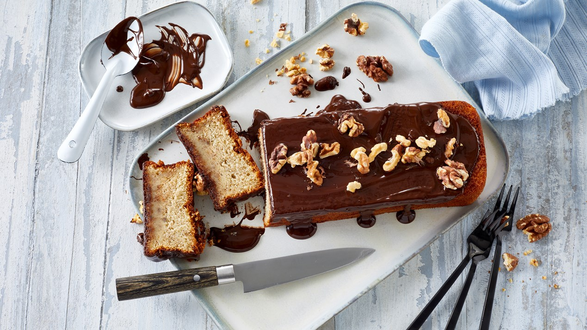

Banankage

Ingredienser
- 3 Æg
- 170g Sukker
- 2 tsk Vaniljesukker
- 125g Hvedemel
- 1 tsk Bagepulver
- 100g Smeltet smær
- 2 Moset bananer
- 100g Smeltet mørk chokolade
Fremgangsmåde
- Pisk æg, sukker og vaniljesukker til en luftig æggesnaps.
- Bland mel og bagepulver og vend det forsigtigt i dejen skiftevis med smørret.
- Vend de mosede bananer i.
- Hæld dejen i en smurt franskbrødsform (ca. 1 liter) og bag kagen nederst i ovnen ved 175° i 55 mim.
- Vend banankagen ud på en bagerist og lad den køle af.
- Tag kagen ud af formen og placer den, med undersiden opad, på et fad.
- Fordel den smeltede chokolade på kagen og server.